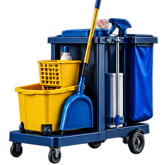

SEO FOR CLEANING COMPANIES
SEO helps your website appear when businesses search Google for commercial cleaning, janitorial services, office cleaning, or porter service.

WEBSITE DESIGN, SEO + AEO MANAGEMENT, NATIONWIDE
Turn searches for commercial cleaning and porter service into more opportunities to earn the contracts your company wants.
START A CONVERSATIONCommercial cleaning decisions often begin with a search, a referral, or a question in an AI chat. StartWeb7 builds a clear website around your services, service areas, and the types of facilities you clean, then supports it with SEO and AEO so potential clients can understand what you offer before they contact you.
SEO helps your website appear when businesses search Google for commercial cleaning, janitorial services, office cleaning, or porter service.
AEO, Answer Engine Optimization, organizes your website so it can be easier to find and understand in AI answer boxes from ChatGPT, Claude, and Gemini.
Yes. The work focuses on making your company easier to find and easier to contact when businesses need ongoing commercial cleaning, janitorial work, or porter service.
Yes. Your pages can clearly explain the cities, regions, and facility types you serve so people can quickly see whether your company is a match.
Yes. AEO helps make your services and answers easier for AI tools to understand when people ask questions in ChatGPT, Claude, and Gemini.